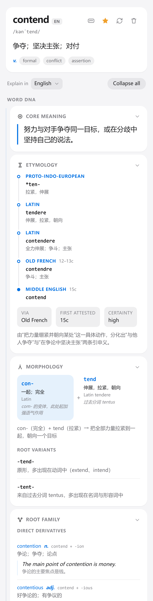
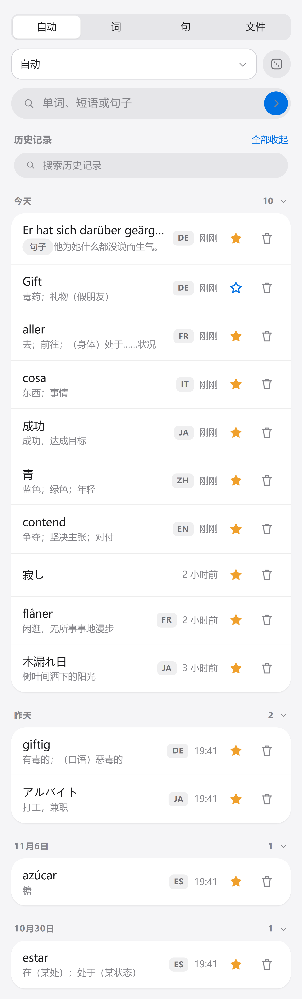
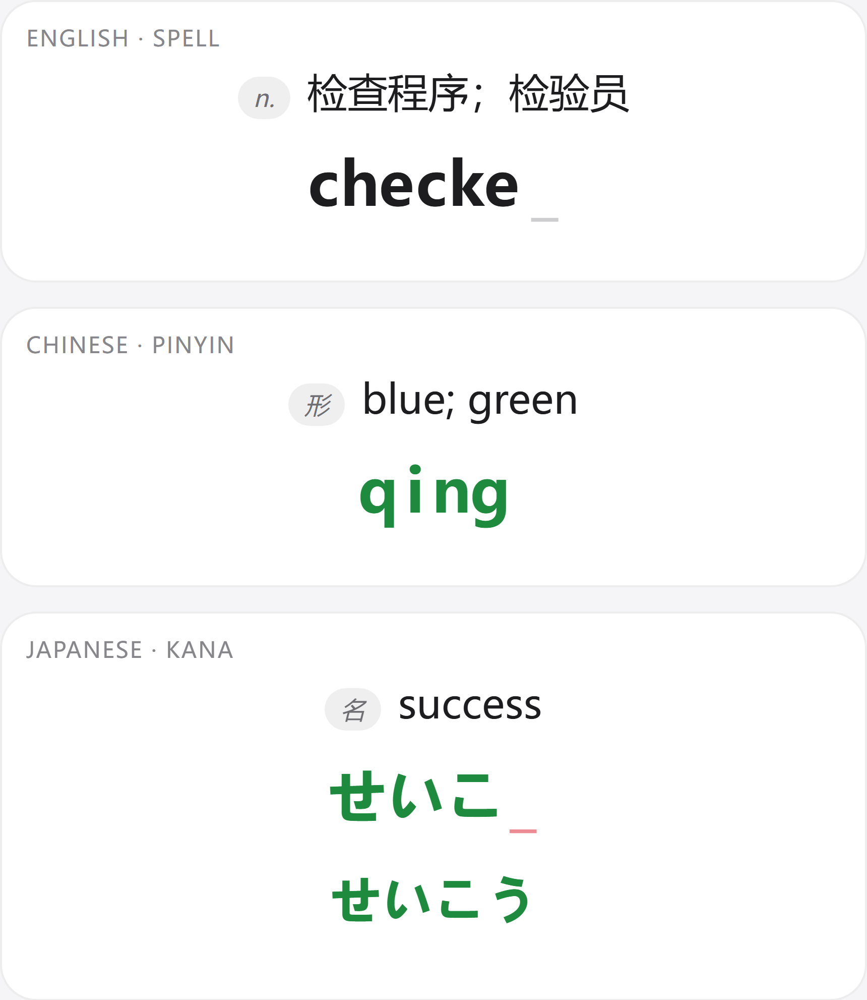

Word · 单词
五种在用语言：英语、法语、德语、日语、中文。
- 40 张词条卡，按 Word DNA / Meaning / Forms / Context 分组
- 意大利语、西班牙语已从在用选择器撤下；本地旧词条仍可打开
- 核心义、词源时间线、构词拆分、词根变体、同根词族
- 义项、搭配、语体、文化、易混词、助记与综合
- 发音、变位、变格、形容词词尾与介词支配
- 单个词条的暂定解释语言切换，回到已生成版本可命中缓存
- 卡片显隐、排序、置顶和恢复默认
Linguist 8.2.0 · Root Atlas
不是多背一个释义，而是看见核心义、词源、构词、同根词族与语境之间的联系。

Why roots
Linguist 把词典从“对应关系”变成“解释系统”。它先给核心义，再沿着词源与构词展开，让同根词、语境和文化线索彼此照亮。
努力与对手争夺同一目标，或在分歧中坚持自己的说法。
A quiet, focused workspace
没有装饰性的仪表盘。信息按学习顺序展开，需要时出现，不需要时收好。

Auto、Word、Sentence、File 四种入口；历史按日期折叠与搜索。
核心义、词源时间线、构词公式和同根词族在同一套卡片中展开。

拼写、拼音与假名；词性和释义先出现，读音只在主动操作后播放。
Roots · Atlas · Memory
Root Atlas 从词源资料建立词根实体、别名、词族和可信度；Personal Root Map 只接收你明确收藏的词根，来源词的星标只作为提示。
RootEntity稳定 rootId、别名迁移、来源与词族关系。
Root Atlas按词根、变体、词族词、含义和来源筛选。
Context-to-Root句子和文件中的词汇可回流到本地词根索引。
滚动复习释义、拼写、同根词三阶段，错误回到队尾。
Complete capability guide
按真实使用路径整理，不按版本更新记录堆叠。每一项都对应 8.2.0 的现有功能。
五种在用语言：英语、法语、德语、日语、中文。
从一次查询走向可持续维护的词根网络。
一句话的语义与语法由两条并行线索解释。
先读文件、确认语言与请求数，再决定是否分析。
.doc 会明确提示提示应该帮助回忆，而不是替用户回答。
查询、收藏和整理在同一套本地数据中闭环。
界面语言、解释语言和学习偏好彼此独立。
没有公共账户，没有项目方中转服务器。
Available everywhere
网页、Android 和 Windows 均为 8.2.0。安装方式与之前保持一致。
每个使用者都需要在 Profile 中填写自己的 DeepSeek API Key。安装和网页版都不会附带公共 Key，也不会共享历史与收藏。
Feedback
欢迎反馈功能建议、界面问题、词源疑点和使用体验。你的实际使用场景会直接影响下一轮改进。
邮件中可附：设备与系统、Linguist 版本、操作步骤、预期结果、实际现象与截图。
请勿发送 DeepSeek API Key、账户余额或其他敏感信息。